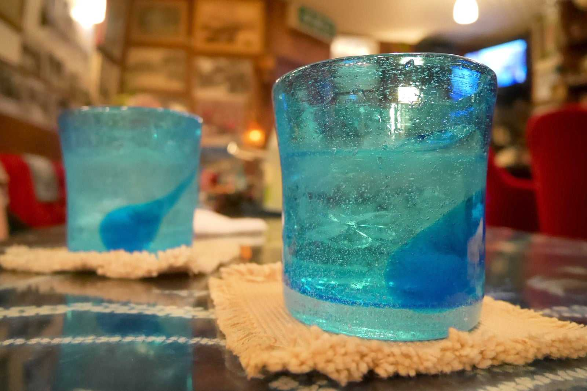

おすすめの飲食店
古酒と琉球料理 うりずん
画像出典：Hotels.comより
那覇・栄町にある、創業1972年の老舗泡盛居酒屋。沖縄県内すべての酒造所の泡盛を揃え、古民家を活かした昭和レトロな雰囲気が魅力です。歴史ある甕クースが並び、泡盛文化を体感できます。
画像出典：Hotels.comより
那覇・栄町にある、創業1972年の老舗泡盛居酒屋。沖縄県内すべての酒造所の泡盛を揃え、古民家を活かした昭和レトロな雰囲気が魅力です。歴史ある甕クースが並び、泡盛文化を体感できます。
画像出典：沖縄美ら海水族館公式サイトより
沖縄・本部町の海洋博公園内にある、日本を代表する大型水族館です。幅35 m×高さ10 m、約750万リットルの巨大水槽で、ジンベエザメやナンヨウマンタが悠々と泳ぐ姿は圧巻！ジンベエザメの“ジンタ”は約8.8 m、世界最長の長期飼育記録を更新中です。